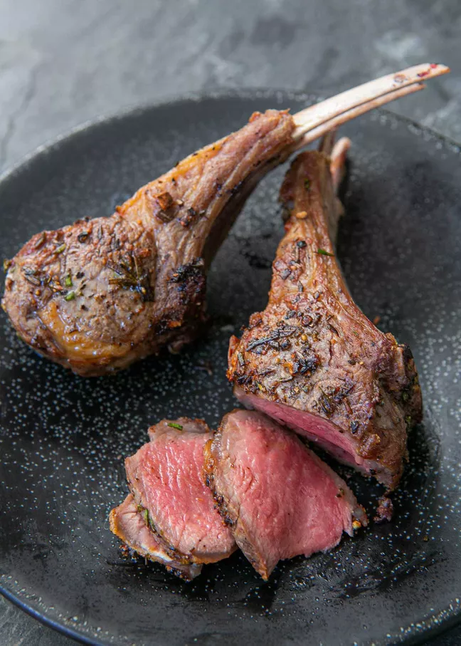

Lamb Chops

Description
If pork chops and beef steaks are the only chops you sear,
it's time to try lamb chops. Lamb chops have a distinctively
rich and savory flavor, and while they're fancy enough for a
dinner party, quick-cooking lamb chops also add variety to weeknight
meals.
Ingredients
- 8 lamb loin or rib chops (1-inch thick)
- 1 tablespoon chopped fresh thyme leaves, plus 1 large sprig
- 3/4 teaspoon kosher salt, divided
- 1/4 teaspoon freshly ground black pepper
- 4 tablespoons unsalted butter, divided
- 1 small shallot, finely chopped
- 1 large garlic clove, smashed
- 1/2 cup dry white wine or low-sodium chicken broth
- 1 teaspoon freshly squeezed lemon juice
- 1 tablespoon finely grated lemon zest
Steps
- Remove the lamb chops from the refrigerator and massage the chopped thyme,
1/2 teaspoon of the salt, and pepper into the meat. Set the lamb chops aside
at room temperature for 5 minutes.
- Melt 2 tablespoons of the butter in a 12-inch skillet over medium-high heat.
Add the lamb chops and cook until a rich, brown crust forms on the bottom,
4 to 6 minutes (if you're using thicker lamb chops, this could take up to
10 minutes).
- Flip the lamb chops and continue to cook until an instant-read thermometer
inserted into the thickest part of the meat registers 145°F, 4 to 6 minutes
more.
- Reduce the heat to medium. Add the shallot, garlic, and thyme sprig to the pan
and cook until shallot softens and begins to brown, about 1 minute.
- Deglaze with the wine or broth and lemon juice, scraping any browned bits
from the bottom of the pan.
- Cook until reduced by half, 1 to 2 minutes. Stir in the lemon zest,
remaining 1/4 teaspoon salt, and 2 tablespoons butter. Cook until the butter
melts and the sauce thickens slightly, about 1 minute. Taste and season with
more salt and pepper if needed. Pour the sauce over the lamb chops and serve
immediately.